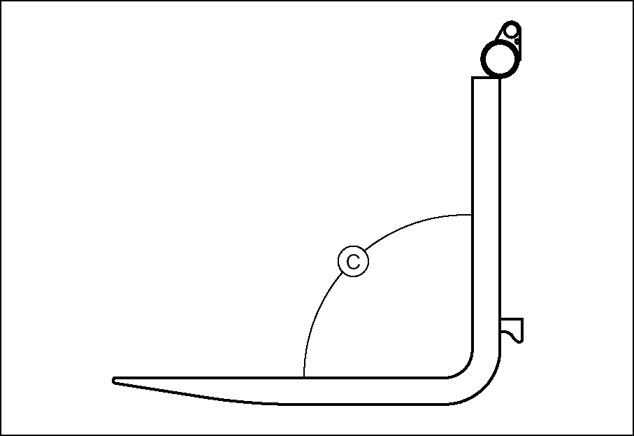
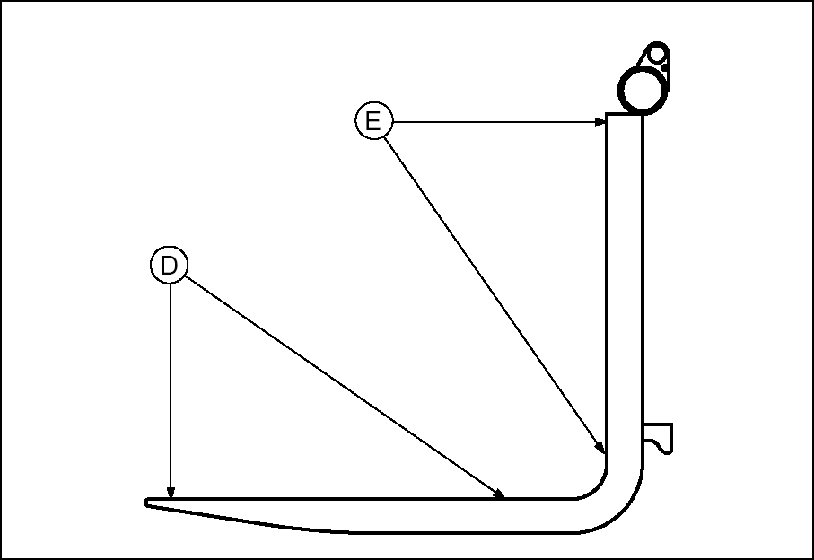
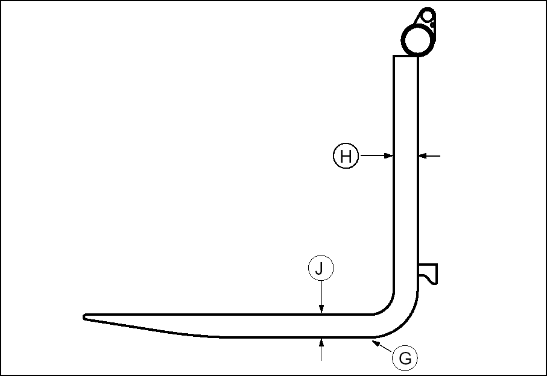

Forks should be inspected, at a minimum, every 12 months. If the
truck is being used in a multi-shift or heavy duty operation, they
should be checked every six months.
Inspect the forks carefully for cracks. Special attention should be given to the heel
section (A), all weld areas and mounting brackets (B). Inspect the top and bottom hooks on
forks used on hook type carriages and tubes on shaft mounted forks. Forks with cracks should
be removed from service.
"Wet Test" magnetic particle inspection is generally preferred due to its sensitivity
and the ease of interpreting the results. Portable equipment is usually recommended so
it can be moved to the lift truck.
Inspectors should be trained and qualified in accordance with The American Society for
Non Destructive Testing, Level II Qualifications.

Check the angle between the upper face of the blade and the front face of the shank.
The fork should be withdrawn from service if angle (C) exceeds 93 degrees or deviates by
more than 3 degrees from an original angle other than 90 degrees, as may be found in some
special application forks.

Check the straightness of the upper face of blade (D) and the front face of shank (E)
with a straight edge.
The fork should be withdrawn from service if the deviation from straightness exceeds
0.5 percent of the length of the blade and/or the height of the shank respectively 5
mm/1000 mm (0.18"/36").
Check the difference in height of one fork tip to the other when mounted on the fork
carrier. A difference in fork tip height can result in uneven support of the load and cause
problems with entering loads.
The maximum recommended difference in fork tip elevation (F) is 6.5 mm (0.25") for
pallet forks and 3 mm (0.125") for fully tapered forks. The maximum allowable difference
in fork tip elevation between the two or more forks is 3 percent of blade length
(L).
Replace one or both forks when the difference in fork tip height exceeds the maximum
allowable difference. Contact your local Time Lift Truck Branch for further
information.

Check the fork blade (J) and shank (H) for wear with special attention to the heel
(G). The fork should be withdrawn from service if the thickness is reduced to 90 percent or
less of the original thickness.
Fork blade length may also be reduced by wear, especially on tapered forks and
platens. Remove the forks from service when the blade length is no longer adequate for
the intended loads.
Check the fork mountings (K) for wear, crushing and other local
deformation, which can cause excessive side to side wobble of the
forks. Excessive clearance on hook type forks may allow them to
fall from the carrier. Forks which show visible signs of such
damage should be removed from service.
Check fork retention devices to make sure they are in place and working.
Check fork markings (N) for legibility. Renew markings as required to retain
legibility.
Lift the mast and operate the tilt control lever, until the top surface of the forks is
parallel with the floor. Place two straight bars that are the same width as the carriage,
across the forks as shown.
Measure the distance from the bottom of each end of the two
bars to the floor. The forks must be parallel within 3 mm (.12 in)
for Full Tapered and Polished (FTP) forks, all other forks 6.4 mm
(.25 in), for their complete length.
Put one fork, one third from the tip, under a fixture that will
not move. Then operate the tilt control with caution until the rear
of the truck lifts just off the floor. Follow the same procedure
with the second fork. Repeat Step a.